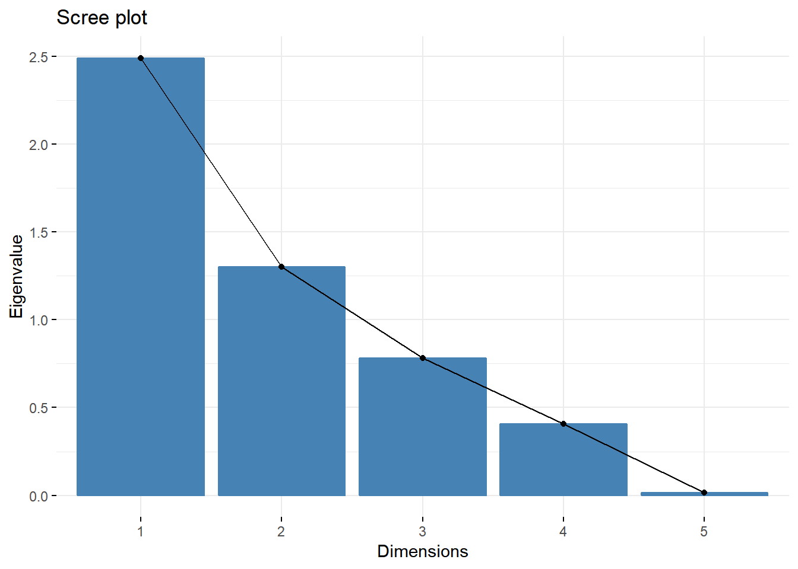
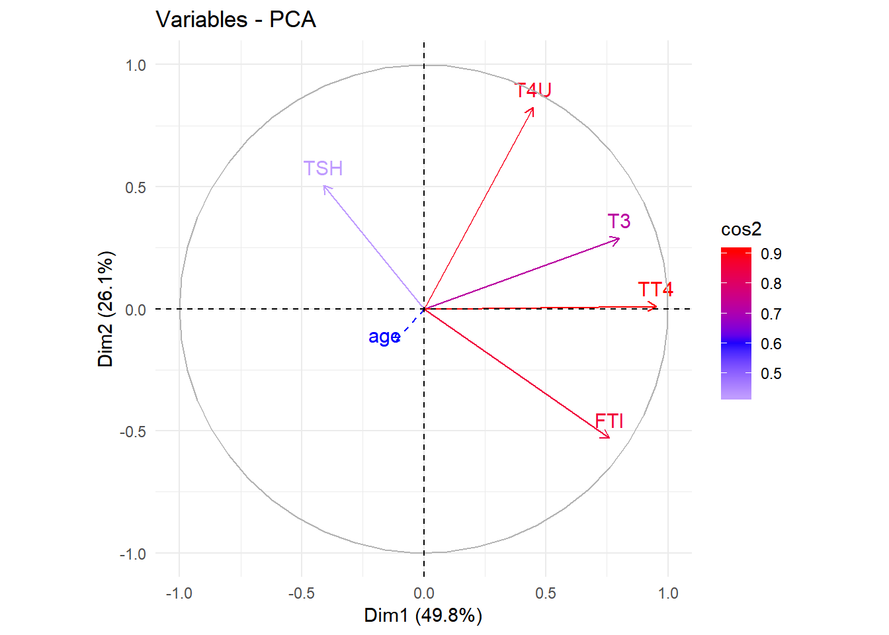
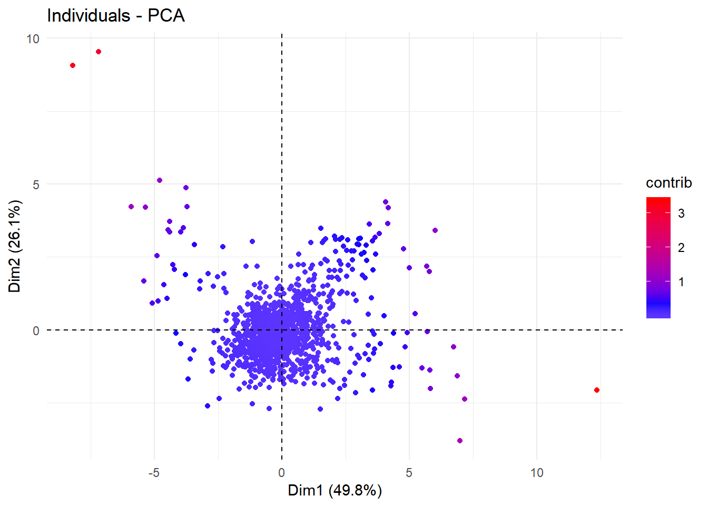
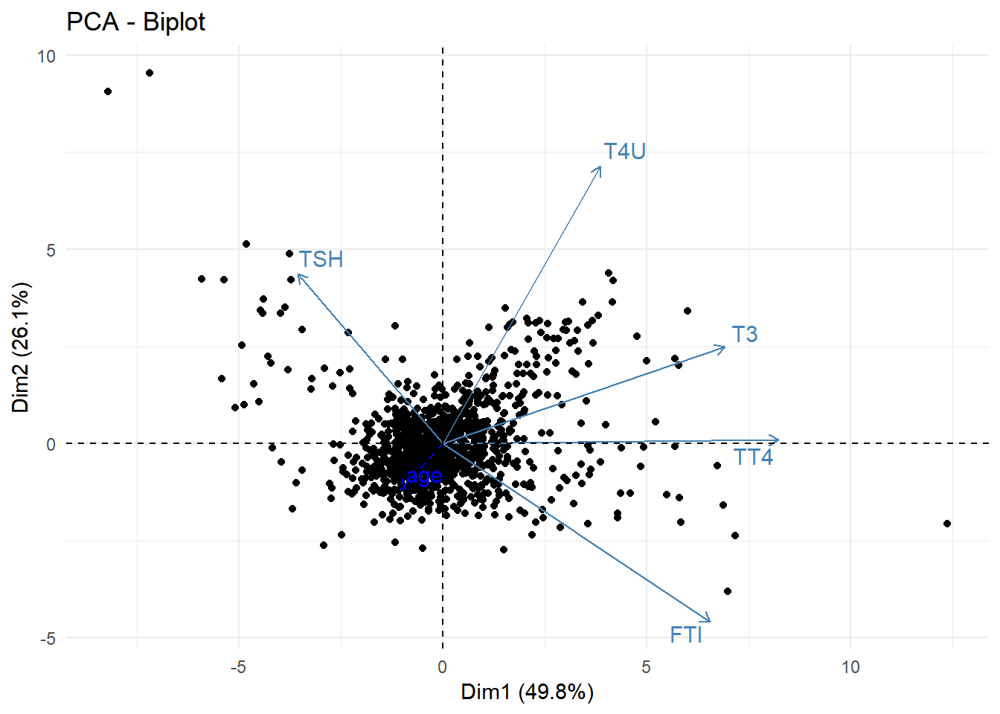
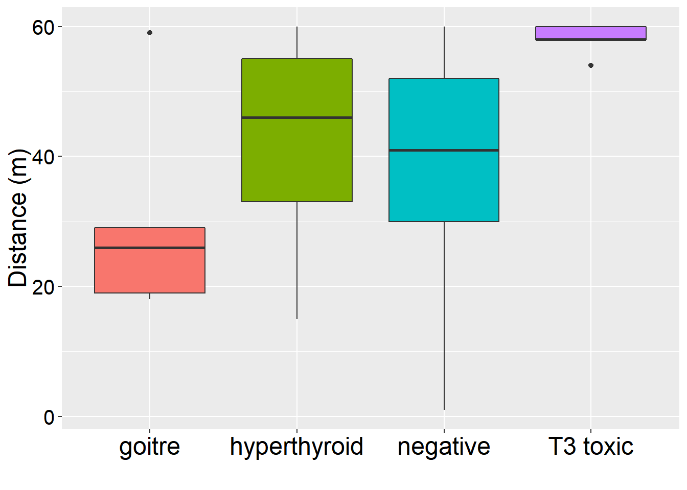

Row{data-height=600}
pca1=PCA(d2,scale.unit=TRUE,ncp=5, graph=FALSE,quanti.sup = 1)
fviz_screeplot(pca1,choice="eigenvalue")
Tout d’abord j’ai fait l’ACP sur la base modifiée, apres j’ai construit le graphe d’eboulis ou ce qu’on appelle effet coude. Ce graphe montre qu’il y a 2 axes significatifs car ils ont des valeurs propres superieur à 1 de plus il est claire que entre l’axes 2 et 3 il y a un coude .
Row{data-height=400}
fviz_pca_var(pca1, col.var="cos2")+
scale_color_gradient2(low="white", mid="blue", high="red",midpoint=0.6) + theme_minimal()
mean(pca1$ind$cos2)## [1] 0.2On remarque que toutes les variables sont independentes .
Aussi il ont une cos2 tres forte a l’ordre de 0.9 sauf pour le test T3 qui est moins faible a l’ordre de 0.7 et le test TSH qui est trop faible a une valeur moins de 0.4
Pour le TSH il est en opposition directe avec FTI on remarque aussi que TT4 est confondu a l’axe 1
v= cor(d2)
v## age TSH T3 TT4 T4U FTI
## age 1.00000000 -0.03348479 -0.1711245 -0.09752434 -0.14724838 -0.02143613
## TSH -0.03348479 1.00000000 -0.1798698 -0.27166472 0.05347012 -0.30918813
## T3 -0.17112448 -0.17986978 1.0000000 0.63232577 0.46799387 0.40485589
## TT4 -0.09752434 -0.27166472 0.6323258 1.00000000 0.45644161 0.78960544
## T4U -0.14724838 0.05347012 0.4679939 0.45644161 1.00000000 -0.15655289
## FTI -0.02143613 -0.30918813 0.4048559 0.78960544 -0.15655289 1.00000000Il y a une correlation negative faible entre: age/TSH, age/T3, age/TT4, age/T4U, age/FTI, TSH/T3, TSH/TT4, TSH/FTI, T4U/FTI
Il y a une correlation positive faible entre: TSH/T4U,,T3/T4U, T3/FTI, TT4/T4U
Il y a une correlation positive forte entre: TT4/FTI et T3/TT4.
Ce resultat est en accord avec le cercle de correlation.
fviz_pca_ind(pca1, col.ind="contrib",geom="point")+
scale_color_gradient2(low="white", mid="blue", high="red",midpoint=0.4) + theme_minimal()
mean(pca1$ind$contrib)## [1] 0.08176615La plupart des individus sont dans la zone d’acceptation qui est l’intervalle [-2,2] . On remarque que la contribution des individus est faible (moins de 2.5) ce qui explique la moyenne de contibution qui est egale a 0.08
fviz_pca_biplot(pca1,repel = T,geom = "point")+
scale_color_gradient2(low="white", mid="blue", high="red",midpoint=0.4) + theme_minimal()
On remarque que la plupart des individus sont en dessous des variables, et le reste est reparti entre les variables. Aussi il est bien claire que les individus sont centres autour du centre de gravite qui l’origine du repere .
pca2=princomp(d2)
pca2## Call:
## princomp(x = d2)
##
## Standard deviations:
## Comp.1 Comp.2 Comp.3 Comp.4 Comp.5 Comp.6
## 49.46980205 23.94985507 16.63532388 12.89729445 0.61710013 0.05845489
##
## 6 variables and 1223 observations.classe=factor(d1$Class)
summary(classe)## goitre hyperthyroid negative T3 toxic
## 5 33 1180 5Row{data-height=600}
p <- ggplot(d1, aes(factor(Class), age))
p + geom_boxplot(aes(fill=factor(Class)))+xlab("")+ ylab("Distance (m)")+
theme(axis.text.y = element_text(colour = "black",size=15),
legend.position="none",
axis.title.x= element_text(colour = "black",size=18),
axis.title.y= element_text(colour = "black",size=18),
axis.text.x = element_text(colour = "black",size=18))
Les individus qui ont attaques par la goitre sont ages entre 20 et 30 ans et il y a une valeur aberante a l’age de 59 ans
L’hypertyroid attaque les individus dont l’age est compris entre 35 et 55 ans T3 toxic attaque les individus les plus ages c’est a dire autour de 60 ans et une valeur aberante a l’age de 55 ans.